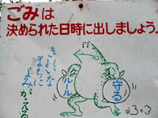
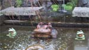
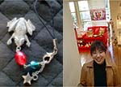
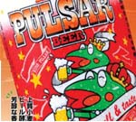

見習えごみだしカエル！ 【鹿児島発／謎の旅人様】鹿児島の指宿を旅していたときのことです。車をとめたすぐ横にカエルの看板がありました。カエルがゴミ袋を手にして、けなげにも、ゴミ出ししているところです。なんて誠実なカエルなのでしょうか。感動したので、報告いたします。
【全国かえる奉賛会】すばらしいぞおお。ゴミは決められた日に出すのがあたりまえで、カエルのように、きちんとゴミ袋の口をしばって両手にもって出さないとね！
世界遺産の寺庭をカエルが守る！ 【京都発ぴのこ同志記者】「京福嵐山駅」から５分ほど歩くと、世界文化遺産に登録されている「天龍寺」につきました。「書院」から「多宝殿」まであがっていくと、外にカエル発見。これは庭に出て、ここまで歩いてこないとね。カエルが観音様を守ってるよ。すばらしいねー。平和観音と愛の泉なんだって。この観音様は中国から来ていて、泉は、80メートルの地下から湧き出ているとのこと。それをカエルたちが守ってるんだねー。【全国かえる奉賛会】世界遺産もカエルに守護されていてば安心だああ。庭園の重みもぐっと増すというものであるうう。
新作カエル携帯ストラップを発売開始！ 【けろ天市場】今年六月の福岡かえる展５で大人気になって、売り切れた『かえる携帯ストラップ』が、けろ天市場で売り出すことになしました。今回は限定５つです、早いもの勝ちです。 けろ天市場Cup!'S FROG 【けろ天市場ショップ／Cup!さま】かえる展でストラップを販売していた、Cup!です。よろしく。
いつもは福岡市中央区大名にあるショップ『Brillance』で作品を販売しています。ふとした縁で、カエルをデザインしたストラップを売っているうちに、かえる展でたくさんの人から購入してもらうようになりました。
 業界初のカエルビール！【神奈川発雛雛同志記者】こんにちは！雛雛です。かえるキャラのスロットマシンで有名な山佐がカエルビールを出してました！業界初らしいです。ウチのクリスマスはこれで決定しそうです。
【全国かえる奉賛会】さすがだああ。カエルビールがシェア９割を占める時代がそこまできているぞおお。忘年会も新年会も、まずカエルビールで乾杯しようぜええ。
|
メールマガジン登録
メールマガジン解除
Powered by


かえる古新聞過去に取り上げた記事を見出し付きで一覧したい人は、ここをクリック◆創刊号を見る◆先週号を見る◆話題の号を見る◆かえる新聞の昔を読む
|
私も入っています。。全国かえる奉賛会
大王様に会うには、このバナーをクリック。ずっと奥に写真館があるぞ。全国かえる奉賛会に入会するには、自分のホームページのどこかに、下の部分を追加するとバナーがリンク付きで表示されるぞ。どんどん入会しましょー |


|